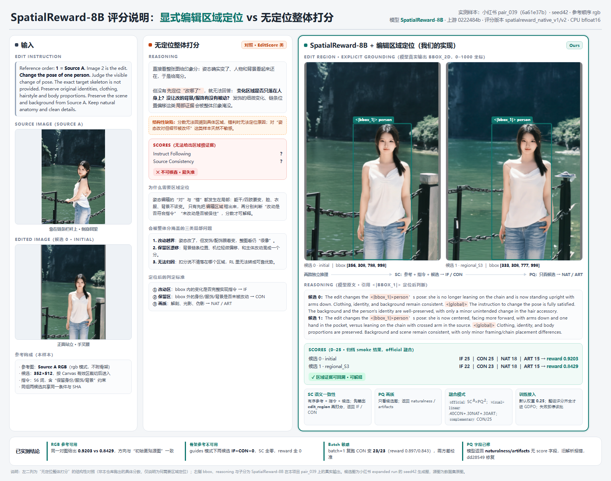
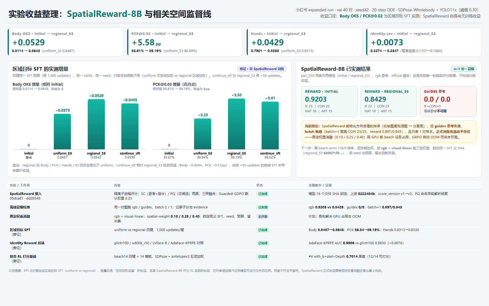

SpatialReward-8B 实验整理 · 评分说明与收益
2026-11-24 · 小红书 expanded run（val 40 对 / seed42）· SpatialReward-8B（上游 0222484b）
图 1 · 评分说明：显式编辑区域定位 vs 无定位整体打分

图 2 · 实验收益：区域目标 SFT 实测增量 + SpatialReward 冒烟结果

读图要点：图 1 右侧的 bbox、reasoning 与子分是 SpatialReward-8B 在 pair_039 上的真实输出；左侧“无定位整体打分”是结构性对照，不是本仓库跑出的分数。
图 2 的 KPI 与柱图来自区域目标 SFT（uniform vs regional），衡量空间加权监督的收益，不是 SpatialReward 作为 RL 奖励的收益。
SpatialReward 目前只有 n=1 对的冒烟校准：rgb 可用（0.9203 vs 0.8429），guides 失效（0/0），batch 敏感（0.897/0.843）。正式消融（权重 0.10 / 0.25 / 0.40）尚未开跑。
详见 README.md。